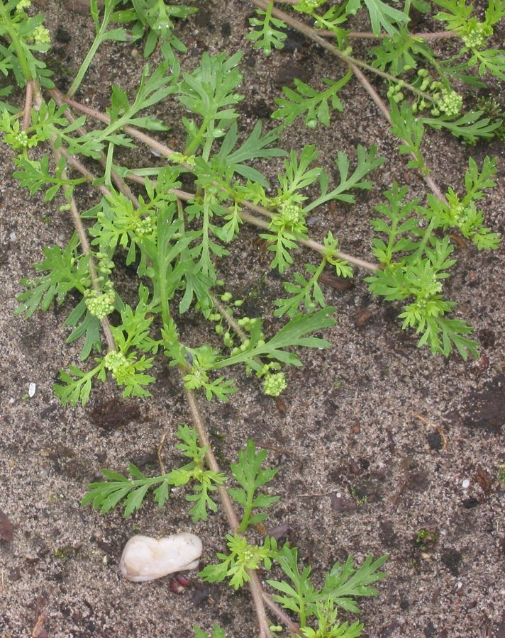

लेसर स्वाइन-क्रेसLesser Swine-cress
Lepidium didymum · Brassicaceae · FLR-0404

- Scientific name वैज्ञानिक नाम
- Lepidium didymum L.
- Family कुल
- Brassicaceae
- Hindi हिंदी
- लेसर स्वाइन-क्रेस
- Local names स्थानीय नाम
- lesser swine cress, swine cress
- Status here यहाँ की स्थिति
- naturalized
- Movement आवागमन
- Resident, here all year
- Known from कहाँ दर्ज
- Others have published records from the wider Awadh–Purvanchal plain, none yet from Basti–Ayodhya अवध–पूर्वांचल से दूसरों के प्रकाशित अभिलेख, बस्ती–अयोध्या से अभी नहीं
- IUCN IUCN
- not evaluated
- Review समीक्षा
- not yet reviewed
When to look कब देखें
Expected mainly in January, February, March, April, November, December. मुख्यतः जनवरी, फ़रवरी, मार्च, अप्रैल, नवंबर, दिसंबर में अपेक्षित।
लेसर स्वाइन-क्रेस / Lesser Swine-cress
Lepidium didymum L. — Brassicaceae
लेसर स्वाइन-क्रेस — यह सर्दियों के मौसम में बगीचों के रास्तों, गीली क्यारियों और दीवारों के पास जमीन पर फैलने वाला एक छोटा खरपतवार है। इसे मसलने पर सरसों या मूली जैसी तीखी गंध आती है। इसकी पत्तियाँ बारीक कटी हुई होती हैं और बहुत छोटे सफेद या हरे फूल खिलते हैं। इसके फल दो गोल भागों में बंटे होते हैं।
Quick Identification त्वरित पहचान
| Feature | Description |
|---|---|
| Plant habit | Spreading, procumbent or prostrate annual herb with strong pungent cress odour |
| Stems | Much-branched from the crown, spreading radially, puberulous or hispid |
| Leaves | Alternate, finely pinnatifid; lobes small, oblanceolate or obovate |
| Flowers | Minute, greenish-white, borne in leaf-opposed or terminal dense racemes |
| Petals | Very small, linear-white or often absent; stamens usually reduced to two |
| Fruit | Distinctive didymous (two-lobed) compressed silicle, deeply notched at base and apex |
Field tip: Crush the feathery dissected leaves between your fingers: the plant gives off a distinct pungent, cress-like or peppery mustard scent.
हिंदी: बारीक कटी पत्तियाँ, मसलने पर तीखी गंध और दो गोल दानों जैसा छोटा फल इसकी खास पहचान है।
Morphology आकारिकी
Measurement not available in consulted sources.
A small, prostrate or decumbent annual herb forming flat, spreading rosettes on damp soil. Taproot slender, pale, pungent to the taste. Stems multiple from the crown, radially spreading, procumbent, striate, slightly hispid with short spreading hairs, light green.
Leaves alternate, deeply dissected; radical leaves forming a loose basal rosette, petiolate, finely one- to two-pinnatifid; cauline leaves smaller, shortly petioled or subsessile, segments oblanceolate, obovate or linear-spathulate, entire or with one or two small teeth, glabrous or sparsely pilose.
Inflorescence consisting of dense, leaf-opposed or terminal racemes on slender peduncles, elongating as fruits develop. Flowers minute, actinomorphic, shortly pedicellate. Sepals four, ovate, obtuse, greenish with white membranous margins. Petals four, white, linear, minute, often rudimentary or entirely absent. Stamens usually two (rarely four), functional, with pale yellow anthers.
Fruit a small, didymous (twin-lobed), laterally compressed silicle, broader than long, deeply notched at both the apex and base, separating at maturity into two subglobose, indehiscent, transversely reticulate-rugose nutlets. Seeds solitary in each valve, reniform, punctate-striate, reddish-brown.
हिंदी: तने जमीन पर फैले होते हैं। पत्तियाँ कई टुकड़ों में कटी होती हैं। फूल बहुत छोटे होते हैं। फल दो गोल भागों में बंटा होता है जिसके भीतर छोटे बीज होते हैं।
Behaviour & Ecology व्यवहार और पारिस्थितिकी
A hardy, cold-tolerant annual native to South America, now widely naturalized across the Gangetic plain and temperate regions worldwide. The species colonizes moist, trampled soils such as garden footpaths, village brick drains, courtyard margins, and the borders of irrigated wheat and potato plots.
The plant forms dense ground-hugging mats that resist foot traffic and light weeding. The pungent glucosinolates present throughout its tissues act as chemical deterrents against generalist herbivores. Seeds are dispersed by water flow along garden drains, by sticking in moist mud adhering to footwear, and through vehicle tyres.
हिंदी: दक्षिण अमेरिका का यह पौधा गीले रास्तों और नालियों के किनारे तेजी से जमता है। पैरों से दबने के बाद भी यह आसानी से पनपता रहता है।
Life Cycle / Phenology जीवन चक्र
Germination commences in November following the arrival of cold nights and crop irrigation. Vegetative rosettes expand through December and January, putting out prostrate flowering branches.
Flowering begins in late December and continues through March. Fruits develop rapidly along the elongating racemes, dropping mature rugose nutlets from February through April. By mid-April, as the intense summer heat sets in, the foliage withers away completely, leaving dormant seeds embedded in the compacted dry soil until the subsequent winter.
हिंदी: नवंबर में अंकुरण के बाद दिसंबर से मार्च तक फूल और फल आते हैं। अप्रैल की गर्मी में पौधे सूख जाते हैं और बीज मिट्टी में पड़े रहते हैं।
Associated Species / Interactions सहजीवी प्रजातियाँ
The tiny apetalous flowers are largely self-pollinating, though minute hoverflies and small beetles occasionally crawl over the inflorescences.
Commonly found growing alongside other winter garden weeds such as common chickweed, bathua, and creeping woodsorrel. Cabbage white butterfly larvae occasionally feed on its leaves when cultivated brassicas are unavailable.
हिंदी: इसके फूलों में खुद ही परागण हो जाता है। यह अक्सर बथुआ और चिकवीड के साथ बगीचों की क्यारियों में उगता है।
Pests and Diseases कीट और रोग
Generally resistant to pests due to its pungent mustard oils, though mustard aphids sometimes infest young racemes. Overly wet winter conditions can cause root rot or damping off in dense stands.
हिंदी: तीखे रस के कारण इस पर कीड़े कम लगते हैं, पर बहुत गीली जमीन में जड़ें सड़ सकती हैं।
Agricultural / Human Relevance कृषि प्रासंगिकता
In eastern Uttar Pradesh, lesser swine-cress is primarily a minor nuisance in kitchen gardens, lawns, horticultural nurseries, and vegetable beds.
हिंदी: यह क्यारियों और बगीचों का खरपतवार है।
Expected Locally स्थानीय रूप से अपेक्षित
Not a field record. Written from published accounts for eastern Uttar Pradesh. No confirmed local sighting yet — if you have seen it, that is what the atlas needs.
अभी तक स्थानीय पुष्टि नहीं। यह विवरण प्रकाशित स्रोतों से है, किसी अवलोकन से नहीं।
Expected in damp garden pathways, well drains, shady nursery borders, and irrigated potato or cabbage plots across Basti, Ayodhya, and neighbouring districts from December through April. GBIF holds published records from the wider Awadh–Purvanchal plain, none yet from Basti–Ayodhya. The first verifiable record from the region will be a dated photograph of flowering plants or a population in a weed habitat or field border with district and coordinates.
हिंदी: बस्ती और अयोध्या में पानी के नलों के पास, गीले रास्तों और सब्जियों की क्यारियों में सर्दियों में इसकी तलाश की जा सकती है।
Distribution वितरण
Global range: Native to temperate and subtropical South America; widely naturalized throughout North America, Europe, Africa, Asia, and Australasia.
In India: Naturalized across the plains of northern India, the Himalayas, and hill stations of central and southern India.
In Uttar Pradesh: Widely distributed in gardens, orchards, and irrigated agricultural lands across the Gangetic plain.
In Basti district / eastern UP: Expected in moist cultivated ground, brick walkways, and irrigated horticultural patches.
हिंदी: मूल रूप से दक्षिण अमेरिकी पौधा होने के बावजूद आज यह भारत और उत्तर प्रदेश के नम मैदानी भागों में खूब उगता है।
Research Questions शोध प्रश्न
- How does the seed germination rate of this naturalized brassica compare across trampled garden soils and loose cultivated loam?
- What chemical compounds in the foliage are responsible for the taint in milk when consumed by dairy animals?
- Which small insect visitors, if any, play a role in cross-pollinating the minute, reduced flowers? / क्या कोई छोटे कीट इसके अति सूक्ष्म फूलों के परागण में भाग लेते हैं?
- How long do the rugose nutlets remain viable in the soil seedbank of local vegetable gardens? / बगीचों की मिट्टी में इसके बीज कितने वर्षों तक अंकुरण क्षमता बनाए रखते हैं?
- Can a child crush a single leaf and identify the familiar smell of radish or mustard?
हिंदी: क्या यह खरपतवार मवेशियों के चारे में मिलकर दूध का स्वाद बदल देता है और इसके बीज मिट्टी में कितने दिन तक जीवित रहते हैं?
Similar Species मिलती-जुलती प्रजातियाँ
| Species | How to tell apart | हिंदी | |
|---|---|---|---|
| `[[mustard\ | Brassica juncea]]` | Large erect cultivated herb with showy yellow flowers and long cylindrical beaked siliques | बड़ा सीधा पौधा, बड़े पीले फूल और लंबी फलियां होती हैं |
Field rule: Look for the prostrate habit, feathery pinnatifid leaves, pungent cress scent, and tiny two-lobed notched fruits.
हिंदी: जमीन पर फैले पौधे, बारीक कटी पत्तियाँ, सरसों जैसी गंध और दो हिस्सों में बंटा छोटा फल इसकी स्पष्ट पहचान हैं।
Taxonomy & Classification वर्गीकरण
Original description. Described by Carl Linnaeus in 1767 in Mantissa Plantarum, page 92.
Subspecies. Often treated in older Indian floras under the synonyms Coronopus didymus (L.) Sm. (Smith 1800) and Senebiera didyma Pers. (Duthie 1903; Hooker 1872). Monotypic in our region.
Family and order placement. Belongs to family Brassicaceae (tribe Lepidieae), order Brassicales.
Phylogenetic notes. Transferred back to Lepidium following molecular phylogenetic analyses demonstrating that the genus Coronopus is nested within Lepidium.
IUCN status rationale. Not evaluated by the IUCN Red List. It is an abundant and widely expanding naturalized ruderal weed.
हिंदी: यह ब्रैसिकेसी (सरसों कुल) का पौधा है। लिनियस ने 1767 में इसका मूल वर्णन किया था।
Photo Gallery फोटो गैलरी
No photos yet — add field photos to media/species/lesser_swine_cress/ and run node scripts/sync_photos.js.
Photos needed आवश्यक फोटो
- [ ] Prostrate mat showing finely pinnatifid leaves (जमीन पर फैली कटी पत्तियाँ)
- [ ] Inflorescence showing minute flowers and developing fruits (सूक्ष्म फूल और फल)
- [ ] Close-up of twin-lobed notched silicle (दो गोल भागों में बंटा फल)
References संदर्भ
- Linnaeus, C. (1767). Mantissa Plantarum, p. 92.
- Smith, J. E. (1800). Flora Britannica, vol. 2, p. 691. (as Coronopus didymus)
- Duthie, J. F. (1903). Flora of the Upper Gangetic Plain and of the Adjacent Siwalik and Sub-Himalayan Tracts, vol. 1, part 1, p. 47. (as Senebiera didyma)
- Hooker, J. D. (1872). The Flora of British India, vol. 1, p. 160. (as Senebiera didyma)
- GBIF Occurrence Data — Lepidium didymum, India (2025).
Source file: species/flora/weeds/lesser_swine_cress.md